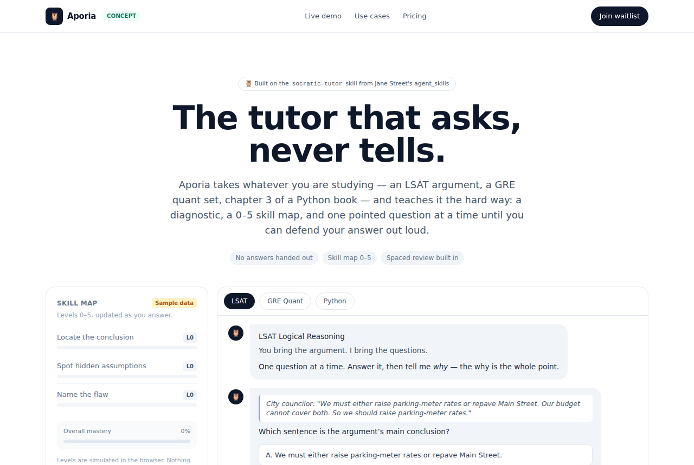

Jane Street's socratic-tutor: a skill file that makes any LLM teach
janestreet/agent_skills · EducationMIT⭐ 3,446

What it is
janestreet/agent_skills is a small MIT-licensed repo from Jane Street. Right now it contains one skill, socratic-tutor: a directory with a SKILL.md file of instructions. Drop it into a coding agent's skills folder, or paste the body into a plain chatbot's system prompt, and ask it to "teach me X." Per the README, the skill runs a diagnostic, builds a skill map with levels 0–5, asks one question at a time, schedules spaced review, and ends with a final assessment.
Why it's taking off
Demo-friendly and easy to try. The repo is a prompt file, not a framework, so anyone can copy it in a minute. It also arrives at a moment when people are using LLMs to prep for the LSAT, GRE, and CFA, or to learn to code, and most generic chatbot tutoring is too agreeable to be useful. A strict, question-first tutor is a visible behavior change.
Where the product opportunity is
The value isn't the prompt; it's the experience around it. A web app where you upload a textbook or syllabus, the skill builds the level map, and the app tracks progress, schedules spaced review, and shows a parent or learner a weekly report. Persistence, content ingestion, and assessment records are the parts a copied SKILL.md can't match.
Worth noting
This is Jane Street's official repo, so any commercial use should credit the source. For K12 audiences in the US, COPPA applies.
Today's top 5
| # | Repo | Buzz | Startup | Overall |
|---|---|---|---|---|
| 1 | janestreet/agent_skills | 7.67 | 7.05 | 7.7 |
| 2 | qybaihe/bla | 7.67 | 6.85 | 7.29 |
| 3 | NVIDIA/auto-ontology | 6.33 | 7.15 | 6.86 |
| 4 | rddmwmddr/android-ad-cleaner | 7.33 | 6.2 | 6.71 |
| 5 | DIYgod/pinky | 8.33 | 6.65 | 6.68 |